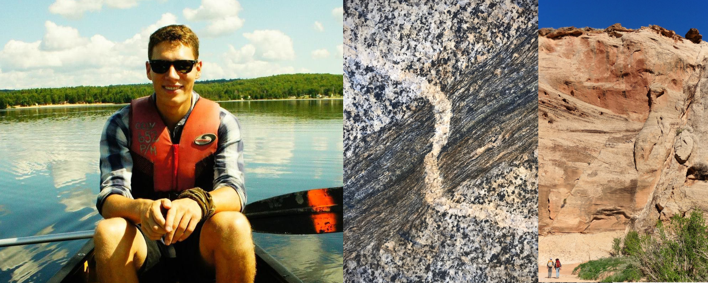

Kelian Dascher-Cousineau
About me

I am a Phd candidate at the University of California Santa Cruz working with Emily Brodsky, Thorne Lay and Noah Finnegan. I study various problems under the umbrella of earthquake physics, hypothesis testing and forecasting.
Research
Earthquake Statistics

What causes some earthquakes to have more aftershocks than others? In this study, we systematically tested how attributes of a mainshock related to its setting (depth, plate boundary type, etc.) and its sources (stress drop, radiated energy, source dimensions, etc.) influence the number of aftershocks to come. We work towards a complimentary approach to aftershock forecasting that relies solely on attributes of the source instead of long term calibration. This project was funded by the NESRC Alexander Graham Bell fellowship.
Fault Zone Geomorphology
Faults are iconic features of the landscape. Can we use their expression in the landscape to better understand them? I am using a combination of field observations, remote measurements and landscape evolution models to better characterize fault structure with a particular focus on fault zone damage. This project is funded by NASA’s FINNEST fellowship.
Fault Mechanics

Do faults smooth with cummulative displacement? In this study, we leveraged faults in the San Rafael Desert as a natural laboratory to test this question. We measured the roughness of over a hundred slip surfaces using high resolution laser scanners. Our study provides clear evidence for smoothing of fault slip surfaces with cummulative offset.